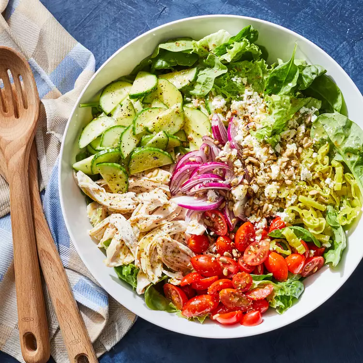

Chopped Power Salad with Chicken
Home page

Description
Prep Time:20 mins. Total Time:20 mins. Servings:4.
Ingredients
- 1/4 cup extra-virgin olive oil
- 3 tablespoons lemon juice
- 1 clove garlic, grated
- 1/2 teaspoon dried oregano
- 1/2 teaspoon sugar
- 1/4 teaspoon salt
- 1/4 teaspoon ground pepper
- 4 cups torn green-leaf lettuce
- 4 cups baby spinach
- 2 cups shredded cooked chicken
- 1 cup halved grape tomatoes
- 1 cup halved and sliced cucumber
- 1/2 cup slivered red onion
- 1/3 cup sliced pepperoncini
- 1/3 cup crumbled feta cheese
- 2 tablespoons toasted unsalted sunflower seeds
Steps
- Whisk oil, lemon juice, garlic, oregano, sugar, salt and pepper together in a large bowl.
- Add lettuce, spinach, chicken, tomatoes, cucumber, onion and pepperoncini; toss to coat
- Serve sprinkled with feta and sunflower seeds.
Nutrition Facts
per serving:
- Calories: 466
- Fat: 24g
- Carbs: 14g
- Protein: 49g